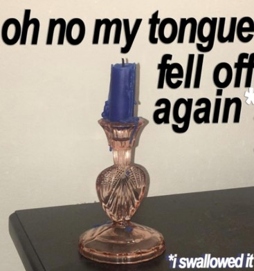
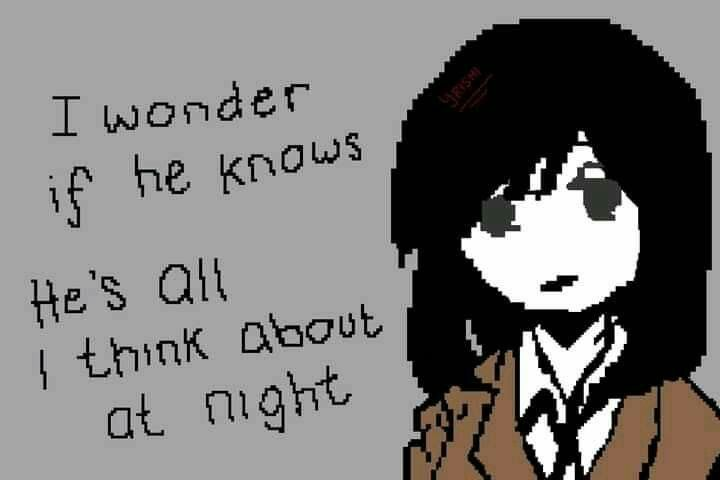
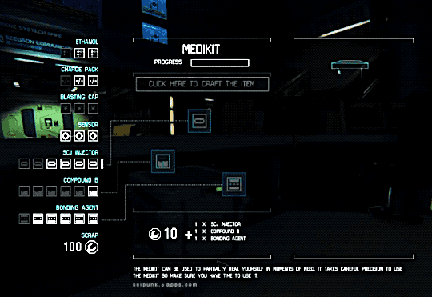
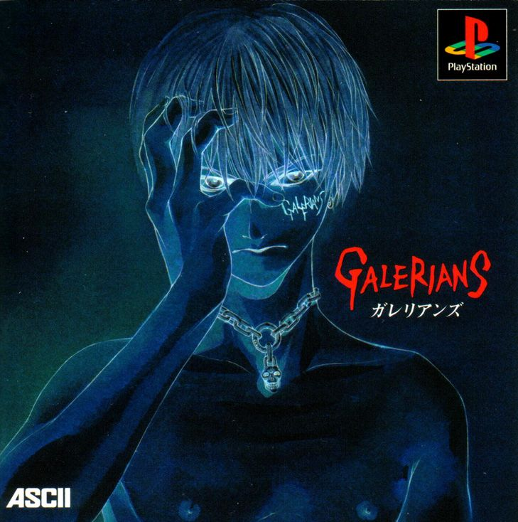
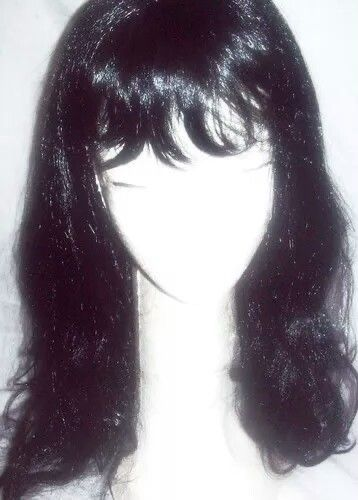

#04 (The hell?)

uh-oh

"come here" I say, & they take a step forward.
"too near" I say, & they take a step backwards.
...
What you'r looking for, is looking for you
What you'r looking for, is looking for you
What you'r looking for, is looking for you
I won't go back
it's time to start
I won't go back

I talk with my mouth, with my hands,
my eyes lay my soul bare to you.
I stutter my words, sometimes, trying to
communicate in another language with you,
Yet, "je t'aime" is all you understand.
The end of everything, the empty
feeling after everyone leaves,
the lightness of letting go,
the act of taking a deep breath
before jumping into the sea

You're braver than you think,
stronger than you look,
and smater than what you assume.
...
hang in there,
hardships are easily forgotten,
only beautiful memories remain.

It doesn't matter how much sadness is in your heart,
if you keep believeing in your dreams,
they'll come true.
...
Life won't stop!
You must never give up tp despair and sadness, no matter what.
Get up on your feet and face sadness.